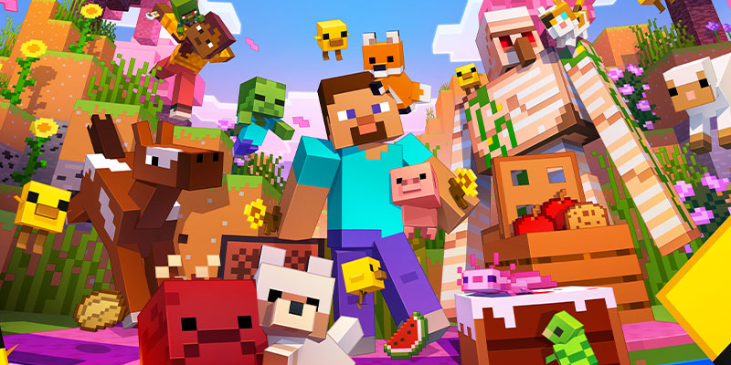
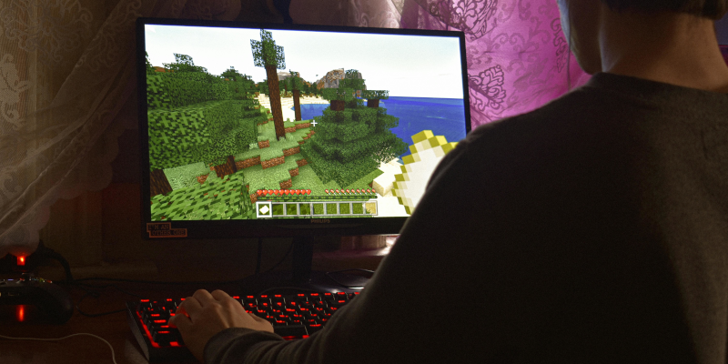
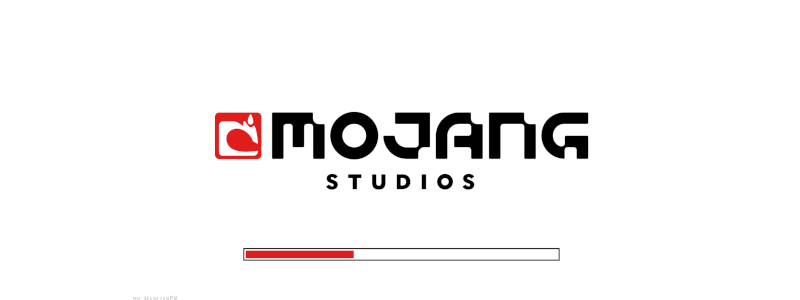

O SURGIMENTO DO MINECRAFT
O Minecraft é um dos jogos mais populares da história, conhecido por sua liberdade criativa e estilo único de gráficos em blocos. Mas sua origem é muito mais simples do que muitos imaginam.

Criador
O jogo foi criado por Markus Persson, também conhecido como Notch, um programador sueco apaixonado por jogos e desenvolvimento. Em 2009, ele começou a trabalhar em um projeto inspirado em outros jogos de construção e exploração.
A primeira versão
A primeira versão de Minecraft foi extremamente simples. Não havia objetivos definidos, história ou modos complexos. O jogador apenas podia explorar um mundo gerado aleatoriamente e construir estruturas usando blocos.

Comunidade
Com o tempo, o jogo começou a ganhar popularidade na internet. A comunidade ajudou a divulgar o projeto, sugerir melhorias e testar novas versões. Isso fez com que o desenvolvimento evoluísse rapidamente.

Lançamento
Em 2011, o Minecraft foi oficialmente lançado, já com muito mais recursos, incluindo modo sobrevivência, criaturas e sistemas mais completos.
Microsoft
O sucesso foi tão grande que, em 2014, a empresa Mojang Studios, responsável pelo jogo, foi comprada pela Microsoft por bilhões de dólares.
Impacto Global
Hoje, o Minecraft é um fenômeno global, jogado por milhões de pessoas em diferentes plataformas, sendo usado não apenas para entretenimento, mas também para educação e criatividade.